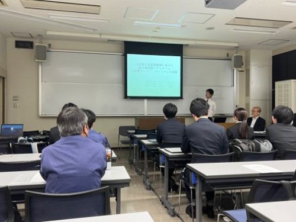
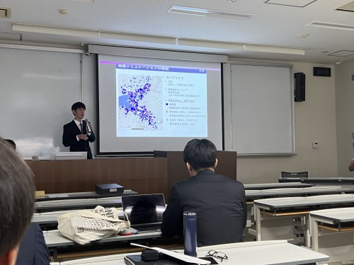
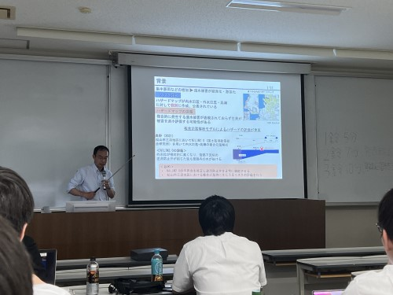

mizukan
イベント
土木学会四国支部第29回技術研究発表会
5月27日（土）,香川大学で土木学会四国支部
第29回技術研究発表会が開催されました!

発表会では,四国の国立大学,高等専門学校,企業の方々が多く参加しました.
みなさん様々な観点,アイデアから研究されていて非常に勉強になりました.


当研究室からは菊池さん,竹内さん,花本さん,安達さんと丸井くん,森脇先生が発表しました！

4回生も参加して積極的に質問し,熱心に話を聞いていました.
他の研究や質問された内容などを参考に,これからの研究の
発展に繋げていきたいです.お疲れ様でした!(^^)!
文責 平尾